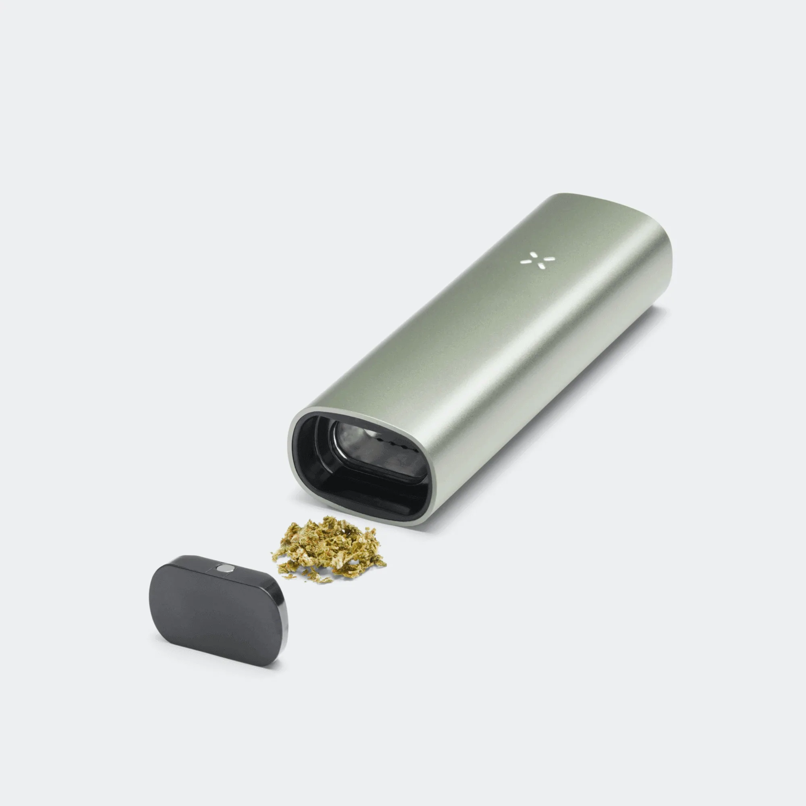

| Cigalikes |
resemble traditional cigarettes and are disposable or rechargeable |
|
2003-present |
| vape pens |
also known as e-pens, e-cigarettes, or mods, are typically larger than cigalikes and have refillable tanks |
|
2007-present |
| Vape Mods |
are more advanced versions of vape pens, allowing users to adjust the power and temperature settings |
 |
2009-present |
| vape pods |
are similar to cigalikes but use pods filled with e-liquid instead of cartridges |
|
2015-present |
| vape tanks |
are the component of electronic cigarette that holds the e-liquid and connects to the battery and atomizer |
|
2007-present |
| Dry Herbs vaporizer |
vaporize dry herbs like tobacco, cannabis, and other dry herbs. |
 |
2010-present |
| Concentrate vaporizer |
vaporize wax and oil concentrates. |
|
2011-present |